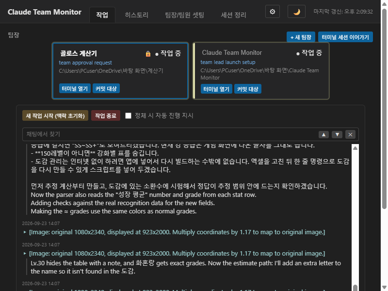
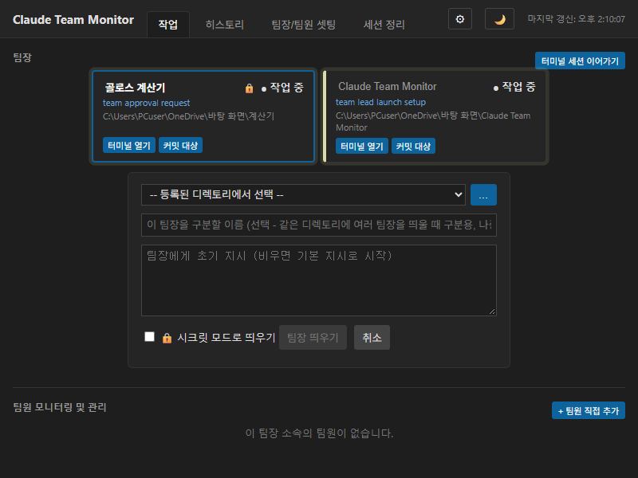
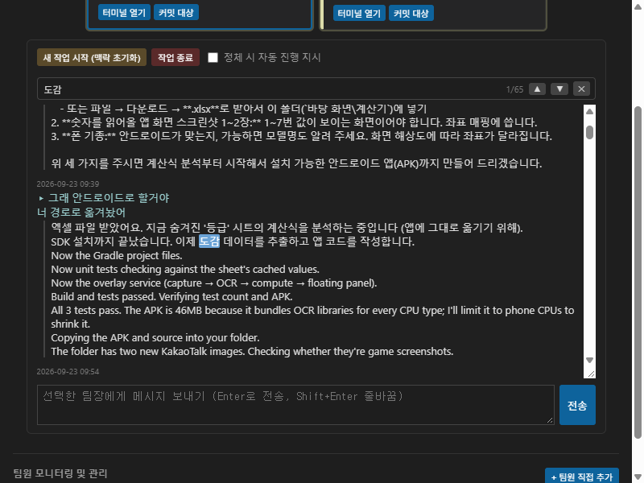
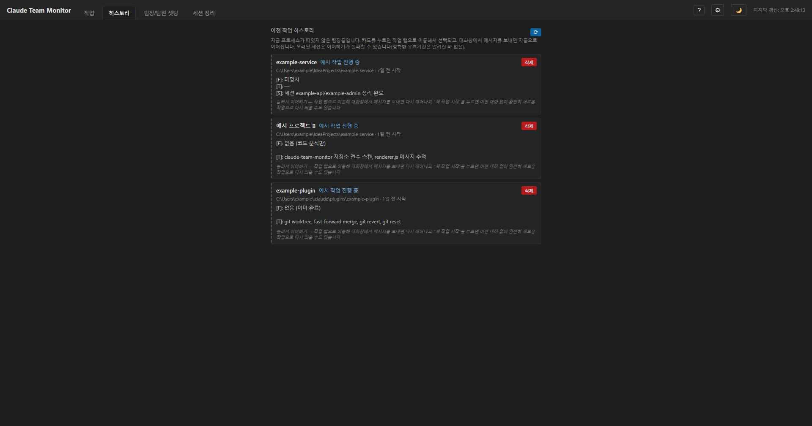
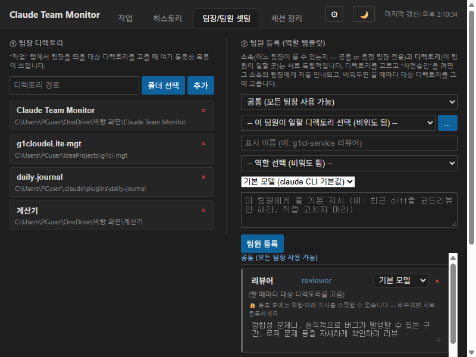
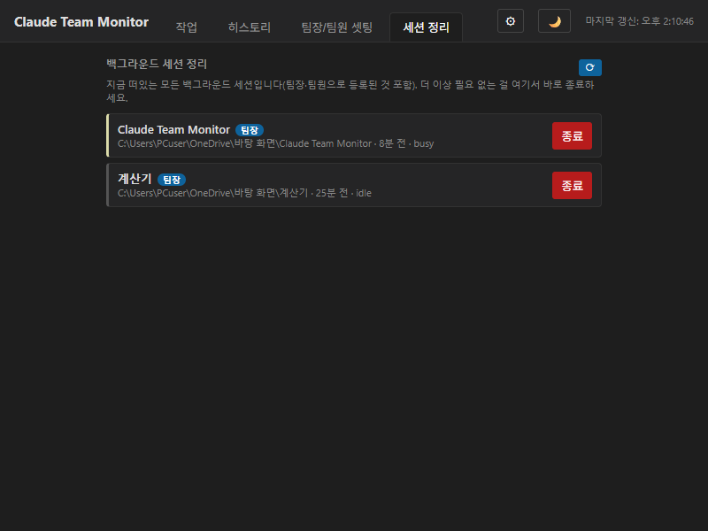
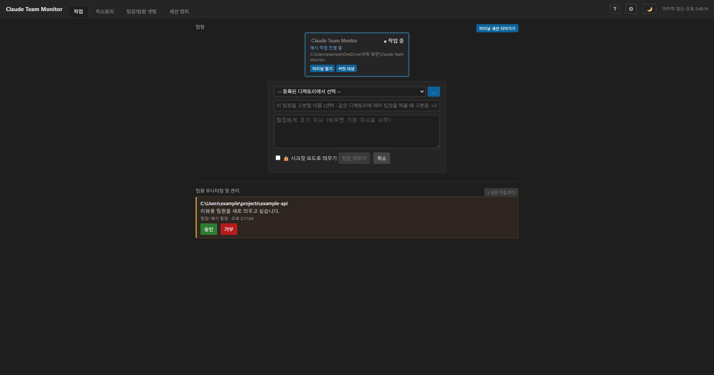

화면별로 어떤 기능이고 어떻게 쓰는지 정리했습니다. 위 탭을 눌러 항목을 고르세요. 스크린샷이 있는 항목은 실제 화면을 그대로 캡처한 것입니다.
1. 작업 탭 — 팀장 카드와 채팅

지금 떠있는 팀장이 카드로 보입니다. 카드를 누르면 오른쪽에 그 팀장과의 대화창이 열립니다. 카드 위쪽 배지로 지금 상태를 바로 알 수 있습니다 — ● 작업 중(실제로 작업 중), 대기 중(할 일을 기다리는 중), ⚠ 확인 필요(응답 없이 멈춰서 확인이 필요함), ⚠ 선택지 응답 대기(팀장이 여러 선택지 중 하나를 골라달라고 멈춰있음), 완료, 오프라인(꺼져있거나 재시작 대기 중). 시크릿 모드로 띄운 팀장은 배지 옆에 🔒가 붙습니다(자세한 내용은 아래 "2. 새 팀장 띄우기" 참고). 이름표를 눌러 라벨을 바로 바꿀 수도 있습니다. 대화창 아래 입력창으로 메시지를 보내면, 팀장이 일하는 중이어도 터미널에서 도중에 입력하는 것처럼 작업 중간에 바로 전달되고 팀장은 하던 작업을 이어가면서 반영합니다. 어떤 이유로 바로 끼워 넣지 못하면 대기열에 쌓였다가 한가해질 때 전달됩니다. 팀장이 멈춘 듯하거나 하던 일을 당장 그만두게 하고 싶을 때는 일하는 중에 보이는 "⛔ 긴급 중지"를 누르세요(확인창에서 예/아니요). 그 팀장 세션만 멈추고 대화는 남으며, 메시지를 보내면 다시 이어집니다.
서브에이전트·팀원·백그라운드 작업 들여다보기 — 팀장이 일을 나눠 맡기면 팀원 칸 위에 서브에이전트 칸이, 개발 서버 같은 명령을 백그라운드로 돌리면 백그라운드 작업 칸이 생깁니다. 서브에이전트·팀원 카드의 "대화 보기"를 누르면 그가 받은 지시, 응답, 쓴 도구(명령·파일)를 읽기 전용으로 볼 수 있고(열려 있는 동안 자동 새로고침), 백그라운드 작업의 "출력 보기"로 그 명령의 최근 출력을 볼 수 있습니다. 백그라운드 작업은 팀장 기록과 실제 프로세스를 대조해 보여 줍니다 — 프로세스 확인이 안 될 때만 데몬이 센 개수만큼 "완료 알림이 없는 최근 것"을 프로세스를 확인해 지금 실제로 떠 있는 것만 위에 보여 주고, 끝난 작업은 접어 둡니다. 대화 보기에서는 지시·응답·보고가 본문으로 보이고 연속된 도구 호출은 한 줄로 접힙니다(눌러서 펼침).
📎 파일 첨부 — 입력창 아래 "📎 파일 첨부"를 누르거나 파일을 창에 끌어다 놓으면 입력창 아래에 첨부 칩이 생깁니다(✕로 취소). 전송하면 첨부한 파일의 전체 경로가 메시지 끝에 자동으로 함께 전달되므로, 경로를 일일이 찾아 붙여넣지 않아도 됩니다. 팀장은 그 경로의 파일을 직접 읽습니다(파일 내용 자체가 복사돼 가는 것은 아닙니다). 글 없이 첨부만 보내도 됩니다. 첨부는 선택한 팀장별로 따로 보관됩니다. 이미지는 복사한 뒤 입력창에서 Ctrl+V로 붙여넣으면 앱이 파일로 저장해 같은 방식으로 첨부합니다(저장 위치: 사용자 폴더의 .claude/claude-team-monitor/attachments, 3일이 지나면 자동 삭제).
2. 새 팀장 띄우기

"+ 새 팀장" 버튼을 누르면 뜨는 폼입니다. 작업할 디렉토리(사전에 즐겨찾기로 등록해둔 것 중 선택), 구분용 이름, 실제로 시킬 지시문을 입력합니다. 처음 쓰는 디렉토리라면 워크스페이스 신뢰(trust) 승인이 필요할 수 있는데, 이 경우 앱이 자동으로 감지해서 정리하고 이유를 알려줍니다.
🔒 시크릿 모드로 띄우기 — 평소에는 팀장이 파일을 고치거나 세션이 끝날 때마다 daily-journal이라는 기능이 그 내용(어떤 파일을 언제 고쳤는지, 세션이 어떻게 마무리됐는지 요약)을 자동으로 기록해둡니다. 이 체크박스를 켜서 띄우면 이 팀장은(그리고 이 팀장이 나중에 spawn_team_member로 만드는 팀원들까지) 그 기록이 아예 남지 않습니다 — Team Monitor 화면에는 평소와 똑같이 보이고, 카드에 🔒 표시만 붙어서 구분됩니다. 민감한 내용을 다루거나 작업 기록을 남기고 싶지 않을 때 켜두면 되고, 한번 켜서 띄운 팀장은 나중에 재시작해도 계속 시크릿 상태가 유지됩니다.
3. 채팅 안에서 찾기(Ctrl+F)

대화창에 포커스가 있을 때 Ctrl+F를 누르면 찾기 바가 뜹니다. 검색어를 입력하면 일치하는 부분이 전부 하이라이트되고, 다음/이전 버튼(또는 Enter/Shift+Enter)으로 이동합니다. X 버튼이나 Esc로 닫으면 검색어도 함께 초기화됩니다.
4. 히스토리 탭 — 지난 작업 이어하기

지금은 오프라인인(껐거나 재시작 대기 중인) 팀장들이 여기 모입니다. 카드를 누르면 작업 탭으로 이동해 그 팀장과의 대화를 그대로 이어갈 수 있고(메시지를 보내면 자동으로 다시 깨어남), "새 작업 시작"을 누르면 이전 대화 없이 완전히 새로 시작할 수도 있습니다. 삭제 버튼은 이 앱의 추적 기록만 지우고, 실제 대화 파일은 건드리지 않습니다.
5. 팀장/팀원 셋팅 탭 — 즐겨찾기와 템플릿

자주 쓰는 작업 디렉토리를 즐겨찾기로 등록해두면 새 팀장/팀원을 띄울 때 목록에서 바로 고를 수 있습니다. 팀원 템플릿은 "이 디렉토리엔 항상 이 역할·이 지시로 팀원을 붙인다" 같은 프리셋입니다 — 사전승인 체크박스를 켜두면 팀장이 승인 요청 없이 바로 그 디렉토리에 팀원을 띄울 수 있습니다. "앱 설정" 탭에서는 정체(방치) 감지 기준 시간과 새 버전 확인을 할 수 있습니다.
6. 세션 정리 탭

지금 떠있는 모든 백그라운드 세션을 팀장/팀원/미등록으로 태그해 보여줍니다(정상적으로 종료됐어야 하는데 어떤 이유로 계속 떠 있는 좀비 세션도 여기 같이 잡힙니다). 팀장이 팀원을 만들어놓고 등록을 깜빡한 경우 "미등록(추정 팀원)"으로 표시되며, 등록 버튼으로 바로 정식 등록할 수 있습니다. 더 이상 필요 없는 세션은 종료 버튼으로 바로 끌 수 있습니다.
7. 승인 요청 응답하기

팀장이 사전승인 안 된 디렉토리에 팀원을 만들고 싶거나, 사용자가 직접 추가한 팀원을 종료하고 싶을 때 이 요청 카드가 뜹니다. 승인/거부 버튼을 누르면 그 결정이 팀장에게 그대로 전달됩니다.
8. 오른쪽 패널 — 보고서·PR·내가 정한 내용 띄우기
작업 탭 오른쪽에 내가 정한 내용을 띄우는 칸입니다. 앱 설정 → 오른쪽 패널에서 "오른쪽 패널 표시"를 켜고 슬롯을 추가하면, 슬롯마다 패널 위쪽에 탭이 생깁니다. 슬롯은 "채우는 방법"을 하나 고릅니다.
- 자동 수집 — 앱이 팀장 대화 기록에서 규칙에 맞는 것을 모읍니다(Artifact 보고서 링크, GitHub PR 링크). 팀장의 협조가 필요 없고 정확합니다. "모든 팀장 / 선택한 팀장만"으로 범위를 고릅니다.
- 팀장이 채움 — 내가 적은 지침을 모든 팀장이 따라 패널 파일을 마크다운으로 갱신합니다. AI가 따르는 방식이라 빠뜨릴 수 있습니다.
- AI가 정리 — 팀장이 일을 마칠 때마다(또는 ⟳ 새로고침) 선택한 모델이 팀장의 최근 대화를 읽고 내 요청대로 내용을 갱신합니다. 추가 토큰이 듭니다(Haiku는 거의 무료, Opus는 호출당 약 2센트, Fable은 약 0.2달러). 재료로 "모은 Artifact 보고서 / GitHub PR 전체 목록"을 같이 줄 수 있고, "자동으로 갱신"을 끄면 새로고침 때만 호출됩니다.
- 직접 쓰기 — 내가 마크다운으로 직접 씁니다.
- 스크립트 — 내가 만든(또는 AI가 만든) 프로그램을 이 PC에서 실행해 그 결과를 표시합니다. 다음 "9. 스크립트 슬롯" 참고.
조작 — 패널 왼쪽 가장자리를 끌면 너비가 바뀌고(더블클릭: 기본 너비), ▸ 로 접었다가 "◂ 패널"로 다시 엽니다. ⟳는 새로고침, ✎는 내용 고치기입니다(자동 수집 슬롯을 뺀 슬롯에서 보입니다).
화면 필터(자동 수집 슬롯) — 리더별, 기간별(전체·오늘·최근 7일·30일)로 골라 볼 수 있고, "현재 리더만"을 켜면 지금 대화창에 띄운 리더의 항목만 보입니다. 필터는 보이는 것만 거르고 모아 둔 자료는 줄이지 않으며, 바꾸면 3초 갱신을 기다리지 않고 바로 반영됩니다.
9. 스크립트 슬롯 — 내가 보고 싶은 것을 직접 만들기
먼저 허용부터 — 스크립트 슬롯은 처음에는 꺼져 있습니다. 앱 설정 → 오른쪽 패널의 "스크립트 슬롯 사용 허용"을 켜고 확인창에 동의해야 만들거나 실행할 수 있습니다(꺼 두면 이미 만든 슬롯도 실행되지 않습니다. 예전부터 스크립트 슬롯을 쓰던 분은 켜진 채로 이어집니다).
프리셋으로 안 되는 "내가 보고 싶은 것"(브랜치·워크트리, 변경 파일, 커밋 그래프 등)을 작은 스크립트로 만들어 패널에 띄웁니다. 스크립트는 패널을 보는 동안 몇 초마다, 새로고침 때, 팀장을 바꿀 때 새로 실행되고, 그 표준 출력이 패널에 표시됩니다. 이 모드 자체는 토큰을 쓰지 않습니다.
- 실행 환경: Node.js, Python, 셸(Windows는 PowerShell). 출력 형식: 마크다운(글·표·링크·이미지) 또는 HTML(그래픽). 제한 시간(기본 10초)을 넘으면 중단되고, 출력은 일정 길이까지만 보입니다. 너무 많이 쏟아내거나 끝나지 않는 자식 프로세스는 함께 정리됩니다.
- 앱이 주는 정보: 선택한 팀장의 폴더·이름·세션·대화 기록 파일 같은 환경 변수(
CTM_LEAD_DIR 등). 전체 목록은 설정 화면의 "📖 스크립트에서 쓸 수 있는 정보"에 있고, 외부 AI에게 부탁할 때 "안내문 복사"로 같이 붙일 수 있습니다.
- ▶ 시험 실행: 저장하지 않고 한 번 실행해 실제 패널에서 보일 모습과 오류·표준 오류 출력을 미리 봅니다.
- 최근 에러 보기: 실패·시간 초과·오류 출력 기록(최근 30개, 같은 문제는 횟수로 묶음)을 껐다가 다시 봐도 남아 있습니다.
AI로 스크립트 만들기·다듬기 — 요청 입력칸에 원하는 것을 적고 버튼을 고릅니다. 모두 모델을 한 번 호출하므로 추가 토큰이 들고, 결과는 칸에 채워지기만 하며 저장되지 않습니다(읽어 보고 저장). 앱 안내가 AI에게 자동으로 들어가므로 AI는 앱이 주지 않는 기능을 지어내지 않습니다.
- AI로 만들기 — 위 칸의 스크립트와 상관없이 처음부터 새로 씁니다(칸을 덮어쓰기 전에 확인).
- ✏️ AI로 수정 — 위 칸의 지금 스크립트를 바탕으로 적은 변경만 반영합니다. 이번 편집에서 이미 한 요청(최근 20개)과, 같은 스크립트로 한 시험 실행 결과가 있으면 함께 전달해 앞의 변경을 깨뜨리지 않게 합니다. 끝나면 "바뀐 부분 보기"(+/− 줄)가 나오고, ↩ 되돌리기로 직전 상태(요청 이력 포함)로 돌아갑니다. 저장하거나 취소하면 이력은 초기화됩니다.
- 🛠 AI로 고치기 — 시험 실행에서 나온 오류를 보고 스크립트를 고칩니다(입력칸에 적은 말은 추가 요청으로 전달).
- 자동 시험 실행 체크(기본 꺼짐) — 수정·고치기 직후 바로 시험 실행합니다. 단 AI가 쓴 코드를 읽기 전에 실행되므로 믿을 수 있는 요청일 때만 켜세요.
AI가 작업하는 동안에는 스크립트 설정 영역만 잠기고 경과 시간이 표시됩니다(다른 탭·다른 설정은 그대로 쓸 수 있고, 돌아오면 계속 진행 중으로 보입니다). 작업 중에 다른 슬롯으로 옮기면 늦게 온 결과는 버립니다. AI가 만든 코드를 고치지 않고 그대로 저장하려 하면 한 번 더 확인합니다.
⚠ 주의 — 스크립트는 이 PC에서 내 계정 권한 그대로 실행되며 앱이 가두지 않습니다. 모르는 사람에게 받은 코드는 넣지 말고, 가급적 읽기만 하는 명령(git status 등)을 쓰세요. 기본 제공 예제는 "깃 그래프(상호작용)" 하나입니다.
10. 그래픽과 상호작용 — HTML 출력, JavaScript 허용
출력: HTML로 두면 스크립트가 낸 HTML이 패널 안의 격리된 프레임에 그려집니다. SVG·CSS로 막대·선 그래프, 카드, 표를 직접 그리고, 앱 색 변수(var(--text), var(--accent) 등)를 쓰면 다크/라이트에 자동으로 맞습니다. 외부 파일 불러오기는 막혀 있어서 차트 라이브러리는 못 쓰고, 마크다운 출력에서도 data: 이미지는 보입니다.
JavaScript 허용(슬롯마다 체크, HTML 출력일 때만)을 켜면 그래픽 안에서 정렬·접기·탭·필터 같은 상호작용이 되고, 아래 세 가지를 앱에 요청할 수 있습니다.
ctm.open(주소) — http/https 주소를 기본 브라우저로 엽니다(<a href> 링크는 자동).ctm.reveal(경로) — 탐색기(Finder)에서 그 파일·폴더 위치를 보여 줍니다.ctm.editor(경로, 줄) — VS Code로 엽니다.
경로는 선택한 팀장의 작업 폴더·허용한 팀원 폴더·git 워크트리 안의 존재하는 것만 됩니다. 막혀 있는 것: 네트워크 접속, 외부 파일 불러오기, 앱 화면·기능 접근, 그리고 파일 수정·삭제·git 커밋 같은 상태를 바꾸는 모든 동작(앱과 다른 출처의 별도 프레임에서 돌고 보안 규칙(CSP)이 막습니다). 프레임이 6초 넘게 멈추면 앱이 감지해 상호작용 없는 화면으로 바꿉니다.
남는 위험 — HTML에 외부에서 읽은 내용(웹 페이지, 이슈 본문 등)이 섞이면 그 안의 악성 코드가 위 범위에서 움직일 수 있습니다(예: 탐색기·VS Code 창을 계속 띄우기). 직접 쓴 코드나 AI가 만든 코드는 읽어 본 뒤 저장하고, 외부 내용을 그대로 HTML에 넣는 스크립트에는 켜지 마세요.
예제: 깃 그래프(상호작용) — 커밋을 클릭하면 변경 파일이 나오고, 파일마다 탐색기·VS Code로 열 수 있으며 워크트리 표를 정렬할 수 있습니다(읽기만 하는 git 명령). 예제 버튼으로 불러온 뒤 시험 실행으로 확인하세요.
11. 앱 설정 탭 — 분류별로 보기
설정이 많아져서 위쪽 분류 버튼으로 한 번에 한 분류만 보여 줍니다(마지막으로 본 분류를 기억합니다).
- 정체 감시 — 팀장이 멈춘 채 방치된 것처럼 보일 때 자동으로 확인·재촉하는 기준(몇 분 이상 idle이면 방치로 볼지, 한 번 확인한 뒤 다시 확인까지 쿨다운). 값을 바꾸면 바로 저장됩니다.
- 스킬 — 등록한 스킬은 이 앱이 띄운 모든 팀장에게 안내됩니다(떠 있는 팀장은 바로, 히스토리 팀장은 다시 이어질 때, 새 팀장은 첫 지시문에). "전역"을 켜면
~/.claude/skills에도 설치되어 모든 claude 세션에서 쓸 수 있고, 끄면 거기서만 지워집니다. "기존 스킬에서 불러오기"로 이미 있는 스킬을 가져올 수 있습니다.
- 오른쪽 패널 — "8. 오른쪽 패널"과 "9. 스크립트 슬롯"에서 설명한 슬롯을 만들고 고칩니다.
- 앱 정보 · 업데이트 — 현재 버전과 최신 릴리스를 확인합니다.
- 숨긴 알림 — ✕/"알림 끄기"로 숨긴 "승인 안 된 디렉토리" 경고와 새 버전 알림을 다시 보이게 합니다.
12. 버전·업데이트·환경 점검
- 버전 표시 — 화면 위쪽에
v0.2.0 · 빌드 11/09 10:20처럼 보입니다. 같은 버전 번호로 여러 번 빌드해도 빌드 시각으로 어느 빌드인지 구분할 수 있습니다. 누르면 앱 설정의 업데이트 확인으로 이동합니다.
- 업데이트 확인 — 앱을 켤 때와 6시간마다 새 버전이 있는지 확인합니다(설정에서 끌 수 있음). 새 버전이 있으면 알림이 뜨고 릴리스 페이지를 열 수 있습니다.
- 시작 시 환경 점검 — 앱이 일하려면
claude CLI가 필요합니다(Node.js는 필요 없고, 스크립트 슬롯이 Node.js를 쓸 때만 참고 안내가 뜹니다). claude가 없거나 너무 오래됐거나, 버전은 맞아도 앱이 쓰는 기능(--bg, agents --json 등)이 claude --help에서 사라졌거나, 앱 파일이 빠져 있으면 문제가 있을 때만 화면 위에 안내 카드가 뜹니다("다시 확인"으로 재점검, ✕로 닫기). 빨간 카드는 앱이 제대로 일하지 못하는 문제, 파란 카드는 참고용입니다.
- 두 번 실행하면 — 이미 떠 있는 창을 앞으로 가져오고 새 창은 뜨지 않습니다(같은 팀장 기록을 두 프로세스가 만지는 것을 막습니다).
- 진단 정보 복사 · 로그 폴더 열기 — 앱 설정 → 앱 정보 아래 "문제가 생겼을 때"에 있습니다. 복사한 글에는 버전·환경 점검 결과·설정 요약·최근 로그가 들어가고, 지시문·스크립트·대화는 들어가지 않으며 홈 폴더 경로는
~로 가려집니다. 앱이 어딘가로 보내지는 않으니 문제를 알릴 때 직접 붙여 넣으세요.
- 로그 — 핵심 실패는 사용자 폴더의
claude-team-monitor/app.log에 남고, 5MB를 넘으면 app.log.1로 넘겨 끝없이 커지지 않게 합니다. 문제를 알려 줄 때 이 파일이 도움이 됩니다.